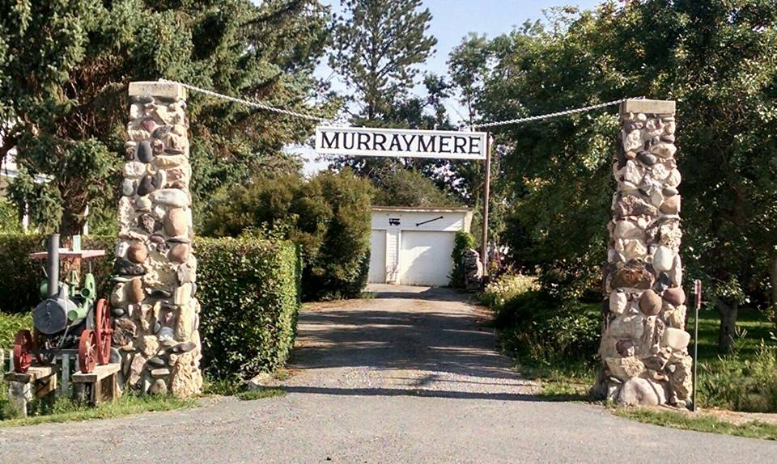
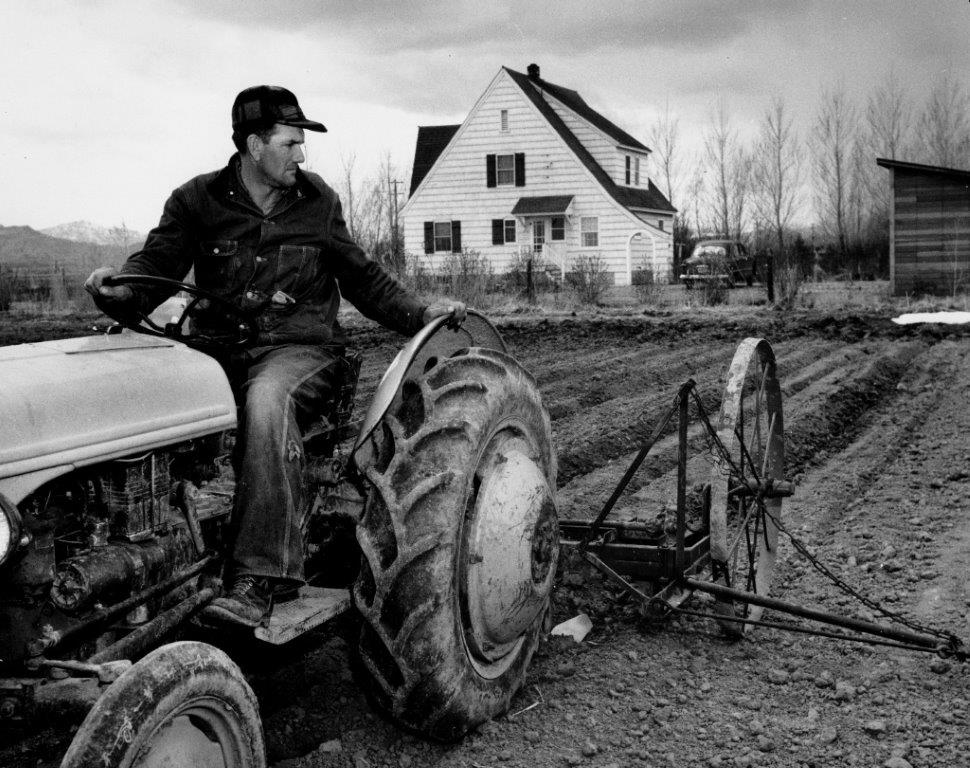
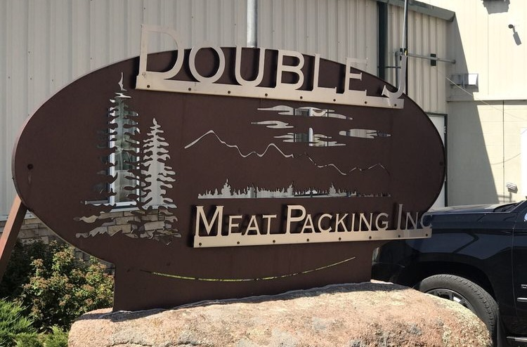
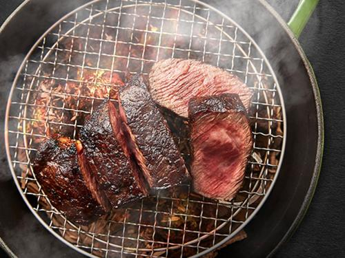

<!DOCTYPE html>
<html>
<meta charset="utf-8" />
<meta name="viewport" content="width=device-width, initial-scale=1.0" />

<head>
    <title>BeefChain | Murraymere Farms</title>
    <link rel="stylesheet" href="css/style.css" />
    <script src="https://www.amcharts.com/lib/4/core.js"></script>
    <script src="https://www.amcharts.com/lib/4/maps.js"></script>
    <script src="https://www.amcharts.com/lib/4/geodata/worldLow.js"></script>
    <script src="https://www.amcharts.com/lib/4/geodata/usaLow.js"></script>
    <link rel="stylesheet" href="https://maxcdn.bootstrapcdn.com/bootstrap/4.0.0/css/bootstrap.min.css" integrity="sha384-Gn5384xqQ1aoWXA+058RXPxPg6fy4IWvTNh0E263XmFcJlSAwiGgFAW/dAiS6JXm"
        crossorigin="anonymous">

    <script src="https://code.jquery.com/jquery-3.3.1.min.js" integrity="sha256-FgpCb/KJQlLNfOu91ta32o/NMZxltwRo8QtmkMRdAu8="
        crossorigin="anonymous"></script>
    <script src="https://maxcdn.bootstrapcdn.com/bootstrap/4.0.0/js/bootstrap.min.js" integrity="sha384-JZR6Spejh4U02d8jOt6vLEHfe/JQGiRRSQQxSfFWpi1MquVdAyjUar5+76PVCmYl"
        crossorigin="anonymous"></script>


</head>

</html>

<body>
    <div class="container">
        <div class="text-center">
            <h1 class="display-3">A Journey of 7,500 Miles</h1>
            <p>Learn what it takes to get Wyoming Beef all the way to Taipei</p>
            <div id="chartdiv" class="text-center"></div>
        </div>
        <hr>
        <div>
            <h1 class="text-center display-4 mile"> Mile 0: Murraymere Farms</h1>


            <div class="text-center"><strong>It all starts in Powell, WY...</strong></div>
            <div class="text-center">
                
            </div>
            <div class="row section">
                <div class="col-sm">
                    <p>
                        <strong>Murraymere Farms</strong> started in 1914 with 80 acres of sagebrush. In 1954 they
                        purchased their first two registered Angus heifers. Four generations later, the Murrays are
                        farming over 2000 acres of crop ground and have approximately 900 mother cows in beautiful
                        Powell, Wyoming.
                    </p>
                    <p>
                        Murraymere cattle are different. Hand selected by rancher Keith Murray, the cattle are raised
                        right, staying with their mother until old enough to wean, then fed a high quality mixture of
                        Murraymere alfafa and corn. Most importantly, Murraymere cattle are never given any synthetic
                        hormones or implants.
                    </p>
                    <p>
                        This effort and care given to the cattle mean that Murraymere's beef yields 100% prime and
                        choice plus with beautiful marbling on nearly every load.
                    </p>
                    <h3 class="text-center">Data from the farm</h3>
                    <p>
                        EID Tags:
                        <a href="data/TAIPEI EID TAGS.xlsx">TAIPEI EID TAGS</a><br>
                        Corresponding SHA256 sum for verification: <a href="https://ropsten.etherscan.io/tx/0x0368bee3a4cd3bf10ad858829323df12b16cb783b621b3ddceaa88f5ae1f1bf4">Here</a>
                    </p>


                </div>
                <div class="col-sm">
                    
                </div>
            </div>

        </div>
        <hr>
        <div>
            <h1 class="text-center display-4 mile"> Mile 433: Double J Meat Packing</h1>


            <div class="text-center"><strong>Cows become steaks in Pearce Colorado</strong></div>
            <div class="text-center">
                
            </div>
            <div class="section">
            <p>
                <strong>Double J Meat Packing</strong> is a rancher owned and family-run business located in the
                Colorado Rockies. At this plant, the cattle are processed into Short Loins, Ribs, Ribeyes and Strip
                Loins.
            </p>
            <h3 class="text-center">Data from Double J</h3>
            <p>
                Pictures of the Shipment and CSV of package identification numbers:
                <a href="data/DoubleJPicsAndData.zip">DoubleJPicsAndData.zip</a><br>
                Corresponding SHA256 sum for verification: <a href="https://ropsten.etherscan.io/tx/0x3f248116ab8bc1cdcfad7b1f71c2d30c50ce66acde4ddf40a8d1f359ae98c834">Here</a>
            </p>
            </div>


        </div>
        <hr>
        <div>
                <h1 class="text-center display-4 mile"> Mile 7500: Arrival in Taipei</h1>
    
    
                <div class="text-center"><strong>Steaks arrive just a few days later at the Sherwood Hotel</strong></div>
                <div class="text-center">
                        
                </div>
                <div class="section">
                <p>
                    The Toscana restaurant is a fine Italian restaurant located in Taipei's Sherwood Hotel. As far as beef is concerned, they specialize in the preparation of the best quality US beef.
                </p>
                <p>
                        Pictures of the cartons received by Toscana for the dinner:
                        <a href="data/sherwoodDirectDelivery.zip">sherwoodDirectDelivery.zip</a><br>
                        Corresponding SHA256 sum for verification: <a href="https://ropsten.etherscan.io/tx/0x1073c641a30e5ca76951cbe2b8678fb4234107106386726ab23b47e5482c9f23">Here</a>
                    </p>
                    </div>

    </div>
</body>
<script>
    var map = am4core.create("chartdiv", am4maps.MapChart);
    map.geodata = am4geodata_worldLow;
    map.projection = new am4maps.projections.Miller();
    map.deltaLongitude = 140;

    var polygonSeries = map.series.push(new am4maps.MapPolygonSeries());
    polygonSeries.useGeodata = true;
    // polygonSeries.include = ["US","TW","CN","CA","MX"];


    var polygonTemplate = polygonSeries.mapPolygons.template;
    polygonTemplate.tooltipText = "{name}";


    polygonSeries.data = [{
        "id": "TW",
        "fill": am4core.color("#abdbd0")
    }];

    polygonTemplate.propertyFields.fill = "fill";

    var usaSeries = map.series.push(new am4maps.MapPolygonSeries());
    usaSeries.useGeodata = true;
    usaSeries.geodata = am4geodata_usaLow;
    var polygonTemplate = usaSeries.mapPolygons.template;
    polygonTemplate.tooltipText = "{name}";
    polygonTemplate.fill = am4core.color("#abdbd0");

    var imageSeries = map.series.push(new am4maps.MapImageSeries());
    var imageSeriesTemplate = imageSeries.mapImages.template;
    var circle = imageSeriesTemplate.createChild(am4core.Circle);
    circle.radius = 4;
    circle.fill = am4core.color("#B27799");
    circle.stroke = am4core.color("#FFFFFF");
    circle.strokeWidth = 2;
    circle.nonScaling = true;
    circle.tooltipText = "{title}";
    imageSeriesTemplate.propertyFields.latitude = "latitude";
    imageSeriesTemplate.propertyFields.longitude = "longitude";

    imageSeries.data = [{
        "latitude": 44.697515,
        "longitude": -108.7291516,
        "title": "Murraymere Farms"
    }, {
        "latitude": 40.63495,
        "longitude": -104.762631,
        "title": "Double J Meatpacking"
    }, {
        "latitude": 25.0581191,
        "longitude": 121.5435083,
        "title": "TOSCANA"
    }];

    var lineSeries = map.series.push(new am4maps.MapLineSeries());
    lineSeries.data = [{
        "multiGeoLine": [
            [
                { "latitude": 44.697515, "longitude": -108.7291516 },
                { "latitude": 40.63495, "longitude": -104.762631 },
                { "latitude": 25.0581191, "longitude": 121.5435083 }
            ]
        ]
    }];
    lineSeries.mapLines.template.line.stroke = am4core.color("#003399");
    lineSeries.mapLines.template.line.strokeOpacity = 0.5;
    lineSeries.mapLines.template.line.strokeWidth = 2;
    lineSeries.mapLines.template.line.strokeDasharray = "3,3";

    map.zoomControl = new am4maps.ZoomControl();
    map.zoomControl.slider.height = 100;
    map.homeZoomLevel = 2;
    map.homeGeoPoint = { longitude: -155.19221029203956, latitude: 45.41968681144685 };

</script>